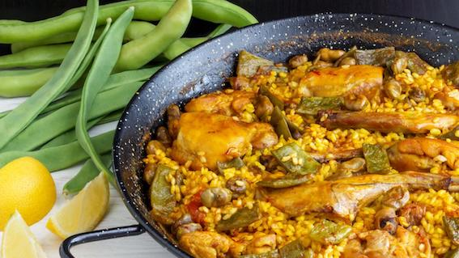

Paella

Description
Paella (pai. ei. uh) is a classic Spanish rice dish made with rice, saffron, vegetables, chicken and rabbit, cooked and served in one pan.
The origin of paella is believed to be in Valencia. A real paella Valenciana is made with chicken and rabbit (and often snails), spiced with sweet paprika and a few strands of golden saffron. And best of all is the socarrat. The slow, undisturbed simmering of the
rice in broth means that the bottom layer will start to caramelize.
Ingredients
- 1 cup of extra virgin olive oil
- 1 chicken cut into pieces
- 1 rabbit cut into pieces
- 300 grams of fresh green beans
- 1 tomato
- 1 tablespoon of sweet paprika
- Saffron
- 6 cups of water
- 200 grams of Garrafon beans
- Salt to taste
- 3 cups of rice
- A bunch of rosemary
Steps
- Heat the oil over a low flame in the paella pan (wide and shallow receptacle).
- Next, sauté the chicken and rabbit for around 5 minutes.
- Then add the freshly chopped vegetables, beans, artichokes and grated tomato to the pan. Fry for several minutes until a smooth sauté begins to form.
- Add the paprika and fry over a low flame for one minute after adding the water. Next, add the saffron, garrofon beans and salt to taste.
- Turn up the heat and leave to boil for approximately 15 minutes.
- Spread the rice evenly across the pan and leave to boil for a further 15 minutes and then test the stock. Add salt if necessary.
- During the last 7-8 minutes add the rosemary. Leave it to cook for around 5 minutes before removing it from the pan.
- The paella is cooked when the liquid has evaporated but the mixture is not completely dry.
- In order to achieve the famous socarrat, the crispy caramelised bottom, leave it to cook a little longer over a low flame.
Back to Main Page